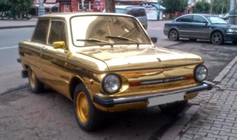

Сверхновейшая информация об автомобилях
Как чинить машину? Советы для владельцев "запорожцев"
Содержание
- История
- Технические характеристике автомобиля ЗАЗ-968М
- Шутки о "запорожце"
- Полезные советы
Запоро́жец (укр. «Запорожець»; экспортные обозначения для стран Западной Европы — Jalta, Eliette и ZAZ) — марка советских и украинских заднемоторных легковых автомобилей особо малого класса, выпускавшихся заводом «Коммунар» в городе Запорожье (позднее — Запорожский автомобильный завод, в 1960—1994 годах входивший в производственное объединение «АвтоЗАЗ»).

Под маркой «Запорожец» производили фактически два разных поколения моделей автомобилей, связанные технической преемственностью и некоторое время сходившие с конвейера параллельно:
- В 1960—1969 годах — первое поколение, ЗАЗ-965 и с 1962 года — ЗАЗ-965А;
-
В 1966—1994 годах — второе поколение, ЗАЗ-966, ЗАЗ-966В, ЗАЗ-968, ЗАЗ-968А и ЗАЗ-968М.
Технические характеристике автомобиля ЗАЗ-968М
- Длина 3730 мм
- Ширина 1535 мм
- Высота 1370 мм
- Клиренс 190 мм
- Колёсная база 2160 мм
- Колея задняя 1200 мм
- Колея передняя 1220 мм
- Масса 720 кг
- Полная масса 1200 кг